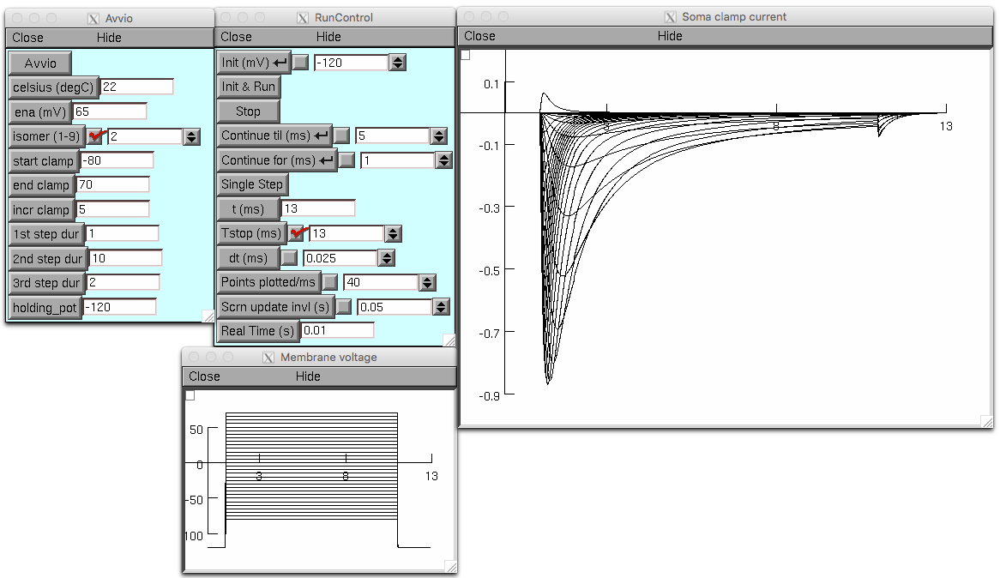
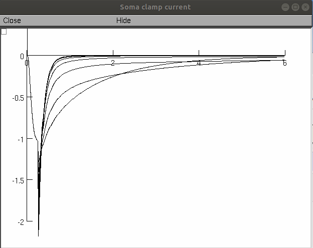

Readme file
The present files complement the paper: Balbi P, Massobrio P, Hellgren-Kotaleski J. A single Markov-type kinetic model accounting for the macroscopic currents of all human voltage-gated sodium channel isoforms. PLoS Compu Biol http://doi.org/10.1371/journal.pcbi.1005737 By adopting a unifying and simplified Markov-type kinetic model, the simulation replicates the detailed electrophysiological behavior of each and every human voltage-gated sodium channels (VGSC, from Nav1.1 to Nav1.9), In particular, current-voltage (or intensity-voltage) curves, current-voltage relationships, fast inactivation availability, recovery from inactivation, in each VGSC isomer are here reproduced. For help in running the NEURON code please see: https://senselab.med.yale.edu/ModelDB/NEURON_DwnldGuide.htm The mosinit.hoc file starts the 1. I_V curves.hoc file described below. 1. I_V curves.hoc. Choose the Nav isomers (1 to 9, Panel 'Avvio' (’Start’) in Italian) you want to display. By clicking on start button the program draws the intensity/voltage curves. You can change the voltage increments, the starting and ending voltages, as well as the duration of voltage clamps, and other parameters.  2. I_V rel.hoc. The program draws the current/voltage relationship, according to the chosen isomer (Panel ‘Avvio’). By choosing an isomer, the code also automatically sets different parameters up for correctly displaying the curves. Click the button ‘Avvio’ to start the simulation. The clamping increment is 1 mV. If a slower simulation speed is requested, try to reduce the dt. The obtained Normalized conductance relation curve can be fitted by means of MultiRunFitter subroutine (see paper for fitting equations). See also the interpreter console for some numerical values. 3. I_V_f_inact.hoc. Steady-state fast inactivation (also called availability) dependence from voltage. Functioning and buttons as above (more or less). Use MultiRunFitter with the Normalized curve, too. Click display button (scroll down the panel if not visible) to see the curves during the calculation (can significantly slow down the elaboration). 4. rec_f_inact. Recovery from (fast) inactivation (also called repriming). Functioning and buttons as above, you got it. Use of the model: load each single .hoc file (1 to 4), according to the electrophysiological data set (current-voltage curves, current-voltage relationship, fast inactivation availability, recovery from inactivation) you want to display. For the corresponding experimental values and protocols, please refer to the literature cited in the accompanying paper, or to file 5. References to the experimental data. 6. fig2g.hoc 20190614 Contribution from Carol Upchurch (confirmed by Pietro Balbi) reproduces Figure 2G in the paper. Note the units in the paper figure are ms on the x axis and mA/cm2 on the y-axis (the extra (typo) scale bar in the inset only applies to the paper figure on the right (real data). 